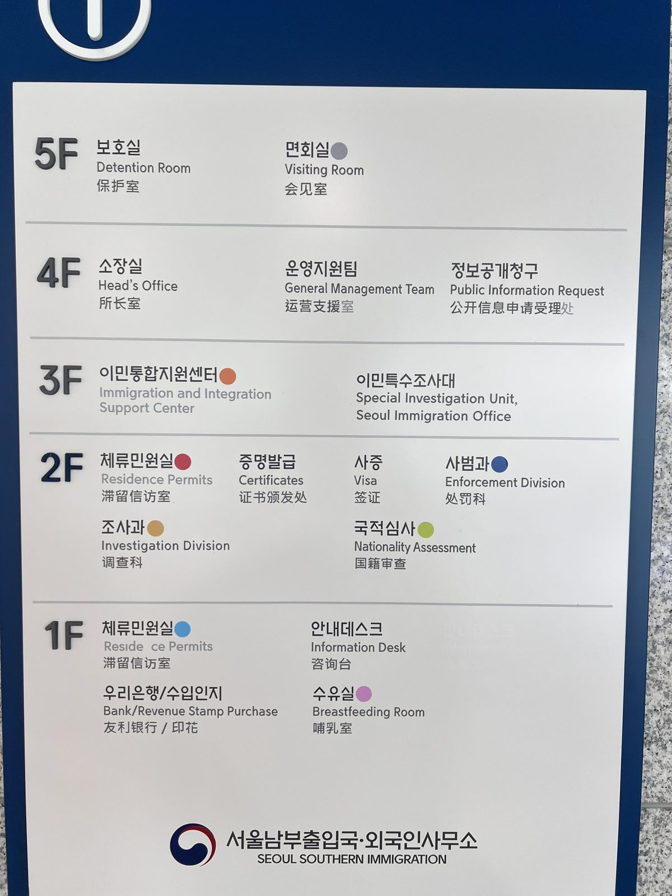

"My family member has been taken into a detention center. Is there no way to get them out?" There is. Detention is not a punishment but an administrative measure to enforce departure. So even before the process ends, there is a way to be released temporarily — that way is temporary release from detention.

What is a detention measure?
Detention is not a punishment. It is a measure by which the immigration authority secures custody, for administrative purposes, of a person subject to compulsory deportation until they are removed.
That it is "not a punishment" is little comfort. In practice it is a restraint on physical liberty, with movement and contact limited.
Detention continues until departure is enforced or the process ends. When prolonged, it can run to several months.
Why respond from the detention stage?
To contest compulsory deportation, you must prepare an objection and a revocation lawsuit. But inside the center it is hard to gather evidence, consult with counsel, and organize your statements.
The time to respond is short, and options narrow once you are in detention. So the order matters. Getting released from detention first, and then preparing to contest, is the realistic way to stop compulsory deportation.
What is temporary release from detention?
Temporary release does not cancel the detention decision itself. It restores physical liberty for a limited time, until departure is enforced.
You apply to the immigration authority, and if granted you can respond to the process from outside the center.
But release is not unconditional. Conditions are usually attached, and the central one is a deposit.
Article 65 of the Immigration Act allows temporary release on a deposit of up to ₩20 million — set with regard to the detainee's circumstances, the grounds for the request, and their assets — together with conditions such as a residence restriction. In other words, the usual form is to pay a deposit and be released. The amount is set by looking at your assets and the likelihood of securing your attendance, and a personal guarantor may also be required.
If you breach the conditions, you may forfeit the deposit, be re-detained immediately, and be disadvantaged in later decisions.
Who applies, and what must be proven, to be released?
Not only the detainee but also family members or counsel may apply. Since the detained person can hardly act, counsel often assembles the evidence and applies from outside.
The key to whether it is granted is showing, with evidence, that there is no flight risk. Not a vague plea, but the following submitted as proof.
| Factor | Documents |
|---|---|
| No flight risk | Proof of fixed residence (lease, resident registration), family residing together |
| Need for treatment | Medical certificate, treatment plan, opinion on outpatient/inpatient need |
| Need to prepare litigation | Counsel retainer, materials on pending litigation |
| Dependents | Family relation certificate, evidence of raising a minor child |
| Ability to pay the deposit | Deposit (up to ₩20M) records, asset/income evidence, personal guarantor |
| Who may apply | The person, family, or counsel (with power of attorney) |
Even in the same circumstances, whether this evidence is in place decides between a grant and a refusal.
What do you do after release?
Being released is not the end but the beginning. Temporary release is time-limited and conditional.
During the release period you prepare the objection and revocation lawsuit contesting compulsory deportation, and you must strictly observe the imposed attendance duty and residence conditions. Breaching them leads to re-detention and a disadvantage in the merits.
In other words, release is a means to secure time to contest, and how you use that time decides the outcome.
Frequently asked questions
This article is general legal information and not advice on any individual case. The requirements and procedures for detention and temporary release vary with the facts and the time, so confirm the judgment for your own situation through a consultation.